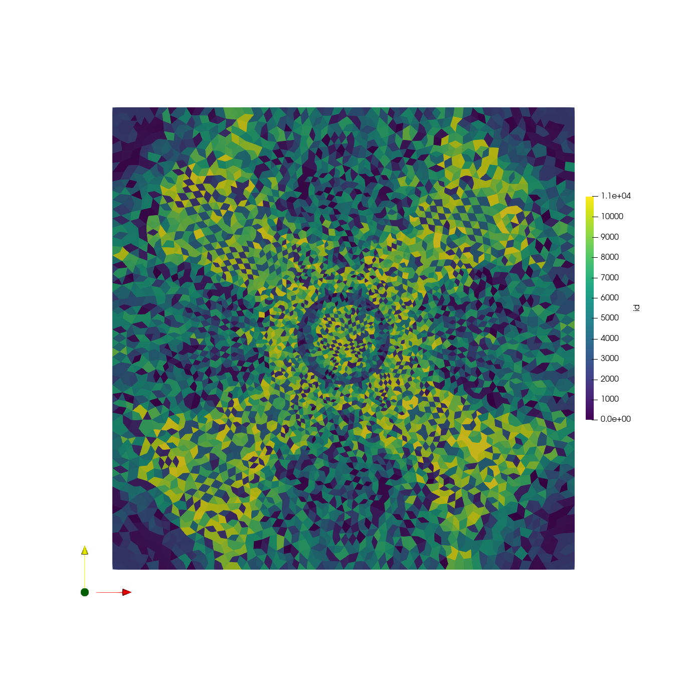

Tutorial 2: In Situ Stress Tutorial¶
This example will review how to setup an insitu excavation example, defining the mesh in the .of file.
Runtime: <10 min on i9 8-core Windows 10 Machine
Expected tutorial output (visualized in ParaView):
{kind=link}
Tutorial Resources¶
The result mesh file will be created during the tutorial, but can also be viewed on Gitlab: mesh.msh.
Tutorial Steps¶
Mesh Pre-Processing¶
In a new text-file, write the following commands. These will define the geometry as a square with a circle in the center for excavation:
# Create a retangular block, group tag is rock, the range is xmin =0, xmax =1, ymin=0,ymax= 1
of.geometry.square 'rock' 0 1 0 1
# Create a hole in the block, cut is to fragment the block and seprate the rock block to hole block and
# new rock block (out of the hole block)
of.geometry.cut.circle 'hole' 'rock' 0.5 0.5 0.1 70
# assign global mesh size, the default keyword is for global entities
of.geometry.mesh.size 'all' 0.02
# starts to mesh using auto method, delaunay the default value
of.geometry.mesh auto
#create excavation element group using cricle tool, based on the centric point and radius
of.group.element.circle 'excavation' 0.5 0.5 0.1
Materials Definition¶
Assign the following material properties (density, Young’s modulus and damping coefficient):
# assign material parameters to solid elements based on the element groups
of.mat.element 'all' ELASTIC den 2000 E 30e9 v 0.3 damp 0.9
of.mat.contact 'all' MC fric 0.3
Define Boundary Conditions¶
# assign the in-situ stress in the domain
of.boundary.element.stress -35e6 0.0 -35e6
# create nodal groups on edges
of.group.nodal.plane 'bottom_edge' 0.0 0.0 1.0 0.0
of.group.nodal.plane 'up_edge' 0.0 1.0 1.0 1.0
of.group.nodal.plane 'left_edge' 0.0 0.0 0.0 1.0
of.group.nodal.plane 'right_edge' 1.0 0.0 1.0 1.0
Run Model, Set Paraview Parameters¶
Define parameters for paraview export:
# set interval to write paraview field results
of.history.pv.interval 500
of.history.pv.field all
of.history.pv.fracture all
of.history.pv.cohesive all
# run steps to equlibrum the in-situ stress, it should be fast
of.step 1000
Set Tunnel Excavation¶
# excavte the tunnel
of.boundary.excavation 'excavation'
# fix the outer boundaries
of.boundary.nodal.velocity 'bottom' Y 0
of.boundary.nodal.velocity 'up' Y 0
of.boundary.nodal.velocity 'left' X 0
of.boundary.nodal.velocity 'right' X 0
Execute Model¶
Define the number of model time-steps:
of.step 50000
# terminate the run and step out solver
of.stop
Full Tutorial Script¶
To run the model, save your text file with the .of extension. Rebuild the openfdem solution and drag your .of file into the OpenFDEM.exe. It will automatically run and save the outputs.
# Create a retangular block, group tag is rock, the range is xmin =0, xmax =1, ymin=0,ymax= 1
of.geometry.square 'rock' 0 1 0 1
# Create a hole in the block, cut is to fragment the block and seprate the rock block to hole block and
# new rock block (out of the hole block)
of.geometry.cut.circle 'hole' 'rock' 0.5 0.5 0.1 70
# assign global mesh size, the default keyword is for global entities
of.geometry.mesh.size 'all' 0.02
# starts to mesh using auto method, delaunay the default value
of.geometry.mesh auto
#create excavation element group using cricle tool, based on the centric point and radius
of.group.element.circle 'excavation' 0.5 0.5 0.1
# assign material parameters to solid elements based on the element groups
of.mat.element 'all' ELASTIC den 2000 E 30e9 v 0.3 damp 0.9
of.mat.contact 'all' MC fric 0.3
# assign the in-situ stress in the domain
of.boundary.element.stress -35e6 0.0 -35e6
# create nodal groups on edges
of.group.nodal.plane 'bottom_edge' 0.0 0.0 1.0 0.0
of.group.nodal.plane 'up_edge' 0.0 1.0 1.0 1.0
of.group.nodal.plane 'left_edge' 0.0 0.0 0.0 1.0
of.group.nodal.plane 'right_edge' 1.0 0.0 1.0 1.0
# set interval to write paraview field results
of.history.pv.interval 500
of.history.pv.field all
of.history.pv.fracture all
of.history.pv.cohesive all
# run steps to equlibrum the in-situ stress, it should be fast
of.step 1000
# insert cohesive elements, the cohesive elements should be inserted fater in-situ stress
of.mesh.insert 'all'
# assign material parameters for cohesive elements
of.mat.cohesive 'all' EM ten 10e6 coh 20e6 fric 0.3 GI 20 GII 40
# excavte the tunnel
of.boundary.excavation 'excavation'
# fix the outer boundaries
of.boundary.nodal.velocity 'bottom' Y 0
of.boundary.nodal.velocity 'up' Y 0
of.boundary.nodal.velocity 'left' X 0
of.boundary.nodal.velocity 'right' X 0
of.step 50000
# terminate the run and step out solver
of.stop